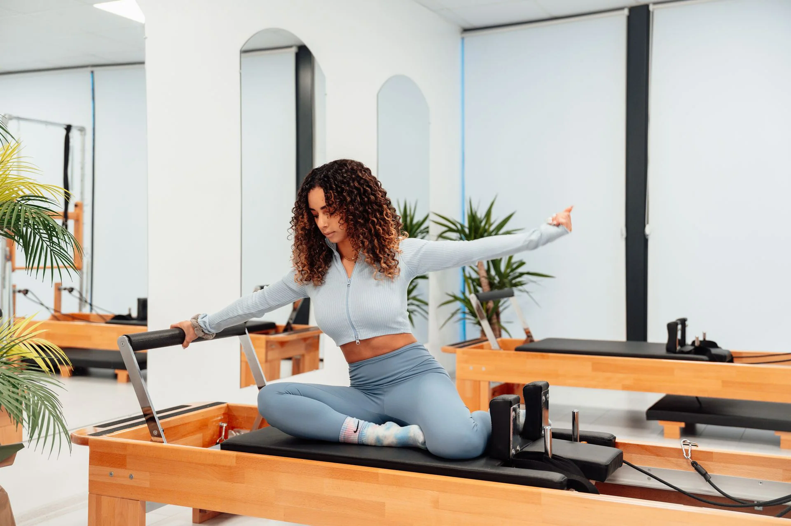

Imagem ilustrativa · não retrata o local ou a equipe01 / Clínica integrada · Potirendaba
Saúde integrada e cuidado individualizado.
Osteo Center Clínica. A Osteo Center reúne osteopatia, Pilates, psicologia, psicopedagogia, nutrição e odontologia no mesmo endereço, em Potirendaba.
- Osteopatia
- Pilates
- Saúde integrada
 Imagem ilustrativa · não retrata o local ou a equipe
Imagem ilustrativa · não retrata o local ou a equipe02 / Conheça a proposta
Sete profissionais, um só endereço.
Osteopatia
Atendimento com o osteopata Dr. Clauton M. Santos, com avaliação cuidadosa e abordagem que considera o corpo como um todo.
Pilates
Aulas com os instrutores Daniel Dias e Lidiane Stefanin.
Psicologia
Atendimento com a psicóloga Poliana Covre.
Psicopedagogia infantil
Atendimento com a psicopedagoga Rose Ríos.
Nutrição
Atendimento com a nutricionista Maria Eduarda Vasconcellos.
Odontologia
Atendimento com a odontologista Mariana Zilli.
 Imagem ilustrativa · não retrata o local ou a equipe
Imagem ilustrativa · não retrata o local ou a equipe03 / Trajetória & cuidado
Uma clínica que reúne várias áreas da saúde em Potirendaba.
A Osteo Center se apresenta como saúde integrada com cuidado individualizado. A equipe, divulgada pela própria clínica, reúne um osteopata, dois instrutores de Pilates, uma psicóloga, uma psicopedagoga infantil, uma nutricionista e uma odontologista. No Instagram, a clínica publica textos explicativos sobre osteopatia, dor e a relação entre corpo e mente.
- Sete profissionais de áreas diferentes no mesmo endereço, conforme a equipe divulgada
- Osteopatia explicada com linguagem técnica e cuidadosa
- Pilates, psicologia, nutrição e odontologia no mesmo lugar
- Nota 5,0 nas avaliações do Google
 Imagem ilustrativa · não retrata o local ou a equipe
Imagem ilustrativa · não retrata o local ou a equipe04 / Seu próximo passo
Vamos conversar?
Potirendaba/SPConversar pelo WhatsApp ↗
Ver mapa do endereço +
Consulte horários, disponibilidade e condições pelo WhatsApp.
Clínica integrada · Potirendaba